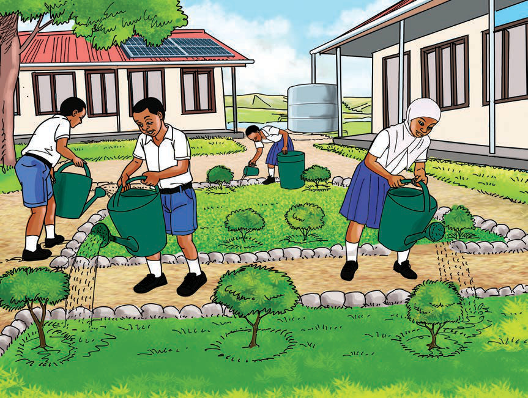

Cleaning the classroom
Activity 4
1. Identify the areas to be considered when you are cleaning your classroom.
2. Identify the tools you would use to clean your classroom.
3. Specify the step you are required to follow when you are cleaning the classroom.
4. Follow the cleaning steps you have mentioned to clean your classroom.